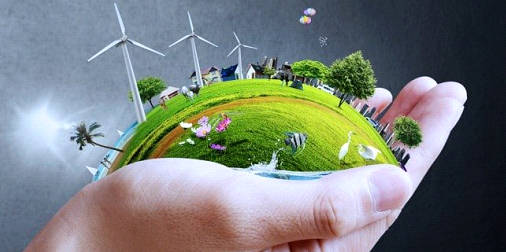

Huis van het toekomst.
Duurzaamheid:
Toekomstige huizen zullen waarschijnlijk sterk gericht zijn op duurzaamheid en milieuvriendelijkheid. Dit omvat energie-efficiënte ontwerpen, groene bouwmaterialen, en integratie van hernieuwbare energiebronnen zoals zonne-energie.
Smart Homes:
Slimme technologie zal naar verwachting een integraal onderdeel worden van woningen. Dit omvat geavanceerde domoticasystemen voor beveiliging, energiebeheer, verlichting, en apparaten die met elkaar communiceren via het Internet of Things (IoT).

Flexibele ruimtes:
Huizen zouden ontwerpen kunnen omvatten die de flexibiliteit van ruimtes vergroten. Modulaire constructies en aanpasbare indelingen kunnen worden gebruikt om aan de veranderende behoeften van bewoners te voldoen.

Persoonlijke assistentierobots:
Robotassistenten kunnen huishoudelijke taken vereenvoudigen, zoals het ordenen van boodschappenlijstjes, het beheren van kalenders en het herinneren aan belangrijke afspraken. Ze kunnen ook spraakgestuurd zijn en communiceren met andere slimme apparaten in huis.

Virtual Reality (VR) en Augmented Reality (AR):
Deze technologieën kunnen worden gebruikt bij het ontwerp, de aankoop en de inrichting van huizen. Potentiële kopers kunnen virtuele rondleidingen maken door huizen voordat ze zijn gebouwd, en AR kan worden gebruikt voor het visualiseren van meubels en decoraties in de ruimte.

Flexibele energieopwekking en -opslag:
Toekomstige huizen kunnen worden uitgerust met geavanceerde systemen voor energieopwekking en -opslag. Dit zou kunnen bestaan uit flexibele zonnepanelen geïntegreerd in bouwmaterialen, opslagsystemen voor thuisbatterijen en slimme energiebeheersystemen. Zo kunnen huizen niet alleen hun eigen energie opwekken, maar ook efficiënt omgaan met de opslag en distributie ervan, waardoor ze minder afhankelijk worden van het traditionele elektriciteitsnet.